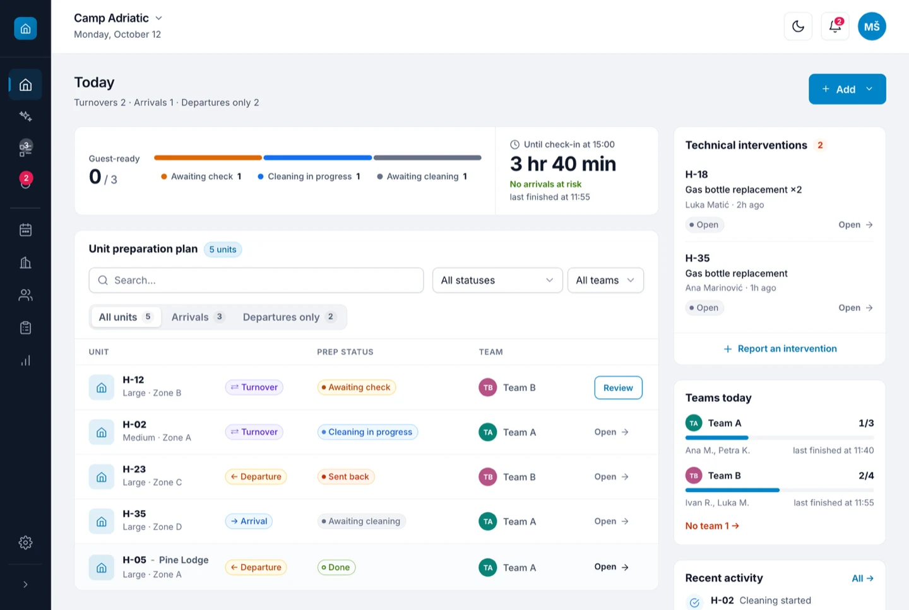

Camppy — campsite operations SaaS
Turns imported bookings into cleaning schedules and a clear day of work for field teams, with role-based views for managers, cleaners and unit owners.
I designed and built the whole thing: the data model and row-level security in Postgres, the booking import from Booking.com and Airbnb calendars, a scheduling board where changes are planned first and saved as one batch, an offline queue for phones with bad reception, and a twelve-language interface. It runs as a PWA so cleaners use it from their pocket.
- Role
- Founder, designer, developer
- Stack
- Vue 3, Pinia, Supabase (Postgres, RLS, Realtime), Vercel functions, PWA, Vitest